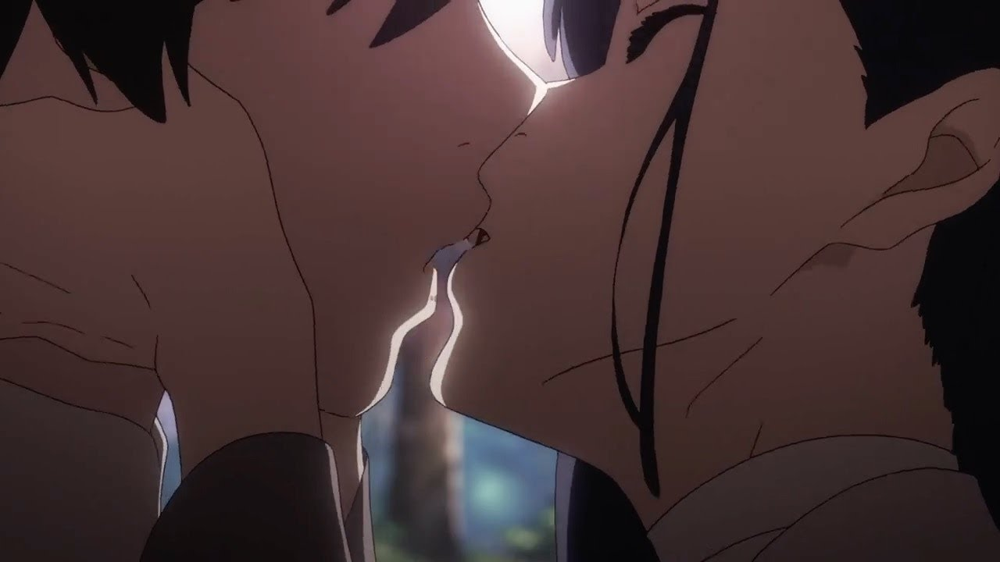
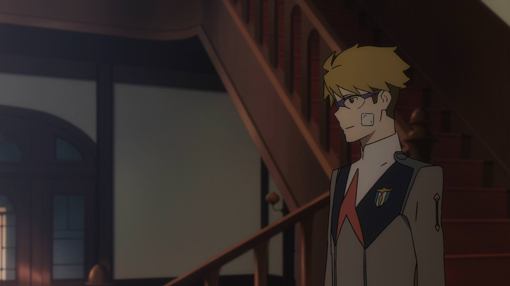

Ichigo - mergina, kuri negali pripažinti, kad pagrindinis veikėjas, Hiro, jos nemyli, todėl jį pabučiuoja jo mylimajai suimtai nuskrendant ir priešais Goro - žmogų, kuris ją myli. Ichigo yra kaip šiltoji pagalvės dalis, kaip uodas vidury nakties. Ji, be to, yra gan nuobodi ir šiek tiek neoriginali (šukuosena panaši į Rem iš Re:Zero).
 